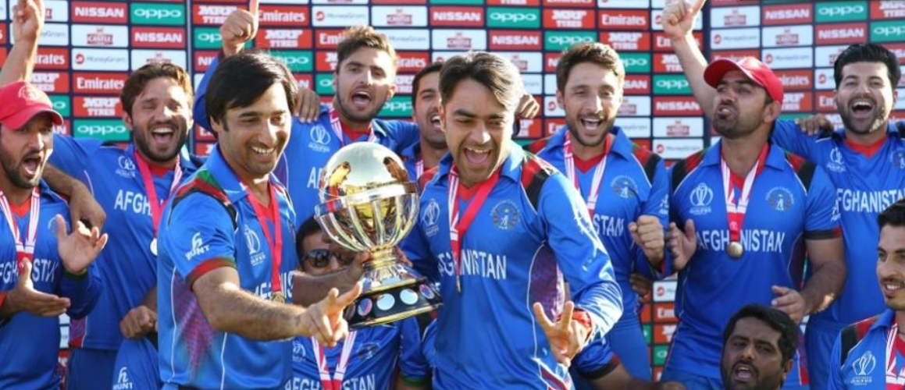

AFGHANISTAN CRICKET TEAM
The Afghanistan men's national team is the 12th test cricket playing Full Member nation. Cricket has been played in Afghanistan since the mid 19th century, but it is only in recent years that the national team has become successful. The Afghanistan Cricket Board was formed in 1995 and became an affiliate member of the International Cricket Council (ICC) in 2001[8] and a member of the Asian Cricket Council (ACC) in 2003.[9]
They are ranked 7th in Twenty20 International cricket as of 7 June 2018 ahead of five other Full Members: Sri Lanka, Bangladesh, Zimbabwe, Ireland and the West Indies.[10] After nearly a decade of playing top class international cricket, on 22 June 2017, in an ICC meeting in London, full ICC Membership (and therefore Test status) was granted to Afghanistan (concurrently with Ireland), taking the number of Test cricket playing nations to twelve. They are also the first country to ever achieve full member status after holding Affiliate Membership of the ICC from 2001 until 2013 and were the only Affiliate member country to ever compete in a major ICC international cricket tournament. [11][12] They hold the world record for the highest ever T20 score with their 278-3 against Ireland at Dehradun on 23 February 2019.